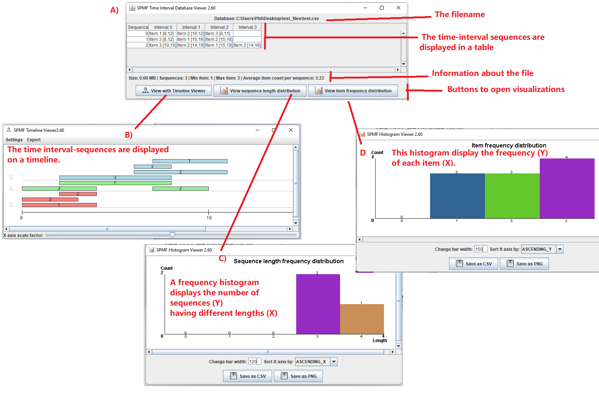

View a Time-Interval Sequence Database with the Time Interval Sequence Database Viewer (SPMF documentation)
Time-interval sequence databases are a type of data taken as input by data mining algorithms offered in SPMF such as FastTIRP and VertTIRP .
SPMF offers a tool to view the content of a time-interval sequence database. This tool is called the SPMF Sequence Database Viewer.
This page explains how to use this tool with an example.
How to run this example?
If you want to run this example from the graphical interface of SPMF, (1) choose the algorithm "Open_sequence_database_file_with_time_interval_sdb_viewer", (2) choose the testTIRP.txt file as input, and then (3) click "run algorithm" .

- If you want to run this example from the source code of SPMF, run the file MainTestTimeIntervalDBViewer.java, which is located in the package ca.pfv.spmf.tests
- If you want to execute this example from the command line interface of SPMF, then execute this command:
java -jar spmf.jar run Open_sequence_database_file_with_time_interval_sdb_viewer testTIRP.txt
in a folder containing spmf.jar and the file testTIRP.txt which is included with SPMF.
What is displayed?
After running the example, the content of the file will be displayed by the tool. The picture below shows the user interface of this viewer.
The window A) show in the picture below is the main window. It displays the time-interval sequence database using a table. The table has three rows in this example. Each row is a sequence from the time-interval sequence database.
Take the first row as example.
The cell in the first column of the first row indicates that the ID of this sequence is 0.
The cell in the second column indicates that the item 1 was observed from time 8 to time 12.
The cell in the third column indicates that the item 2 was observed from time 10 to 16.
The fourth cell in that row indicates that the item 3 was observed from time 8 to 11.
The other sequences follow the same format.
This view as a table can be useful to understand the content of a sequence database file.
Besides, there are buttons that provides additional features:
- By clicking on the button "View with Timeline Viewer ", a new window is opened, presented as window B) in the picture below. This window displays the time interval-sequences visually using a timeline. There are three sequences in this example, and each sequence is displayed using a different color. There is a "Settings" menu in this window that allows to adjust the appearance, and this timeline view can be exported as an image using the "Export" menu".
- By clicking on the button "View sequence length distribution ", a new window is opened, presented as window B) in the picture below. This window displays the frequency histogram of the different sequence lengths in the current file. The number of sequences is the Y axis and the different sequence lengths are the X axis. There are some buttons in this window to export the data from the frequency histogram as a CSV file so that it can be imported in other software (e.g. Excel), or as a picture. Besides some options are provided to adjust the bar width and the order in which the X axis is sorted.
- By clicking on the button "View item frequency distribution ", a new window is opened, presented as window C) in the picture below. This window displays the frequency histogram for the frequency of the different items in the current file. The number of occurrences (or support) is the Y axis and the different items are displayed on the X axis. There are some buttons in this window to export the data from the frequency histogram as a CSV file so that it can be imported in other software (e.g. Excel), or as a picture. Besides some options are provided to adjust the bar width and the order in which the X axis is sorted.

What is the input?
The algorithm takes as input a time-interval sequence database, as used by algorithm such FastTIRP.
The above example is provided in the file testTIRP.txt of the SPMF distribution. The content is as follows:
@FILETYPE="Simple time interval sequence database"
@SOURCE="SPMF SOFTWARE https://philippe-fournier-viger.com/spmf/"
8,12,1;10,12,2;8,11,3;
8,12,3;10,16,1;15,18,2;
10,16,3;14,19,2;15,19,1;14,16,2;
The first two lines of the file are optional metadata indicating the filetype and the source of the data. Then the following lines contain the interval sequences.
In this format, each event type is an integer (A = 1, B = 2, C =3).
Then, each line is a sequence. This file has three lines and thus three sequences.
In a sequence (line), each event is represented using the format X,Y,Z; where X is the start time, Y is the end time, and Z is the event type.
For instance, the first line indicates that an event of type 1 has started at time 8 and ended at time 12, that an event of type 2 started at time 10 and ended at time 12, and that an event of type 3 started at time 8 and ended at time 11. The other lines follow the same format.